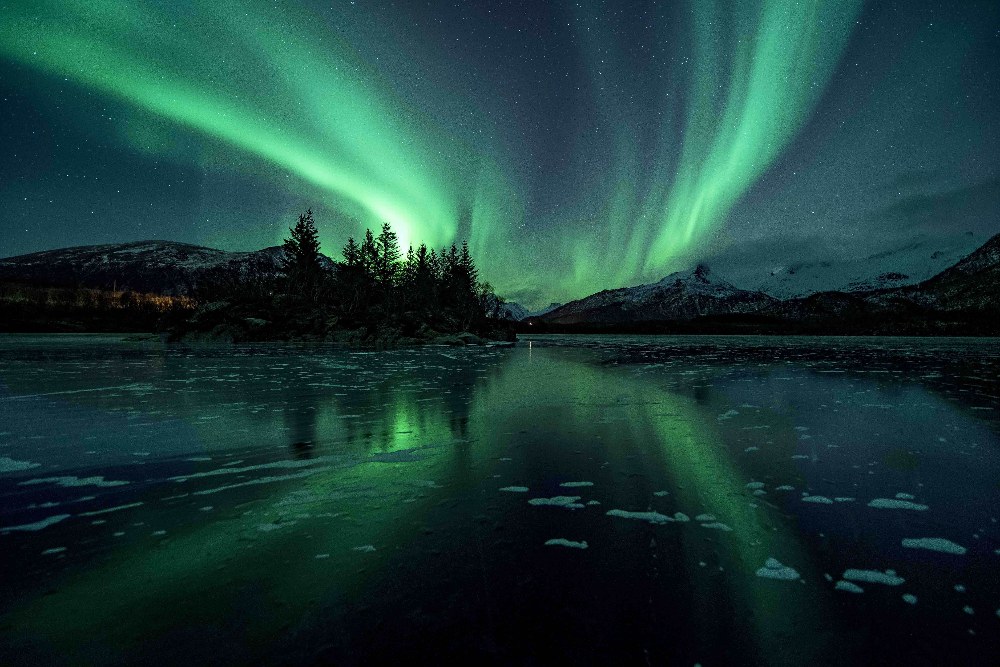

Acerca de los Aurora Boreales
La aurora boreal es como un espectáculo de luces de colores en el cielo nocturno. Ocurre en lugares muy fríos, como en el Polo Norte. De repente, el cielo se llena de tonos verdes, rosados y violetas que parecen bailar. ¡Es como si el cielo estuviera pintando un arcoíris gigante! Las auroras suceden porque el sol envía partículas especiales a la Tierra, y cuando chocan con nuestra atmósfera, ¡hacen magia! Aunque no se puede tocar, es hermoso mirar y soñar con lo grande que es nuestro mundo.
Actividades
- Con témperas y esponjas, los niños pueden recrear la aurora boreal en papel negro. Usa tonos verdes, morados y rosados.
- Baile de luces: Pongan música suave y bailen en casa, moviéndose como si fueran luces que danzan en el cielo.